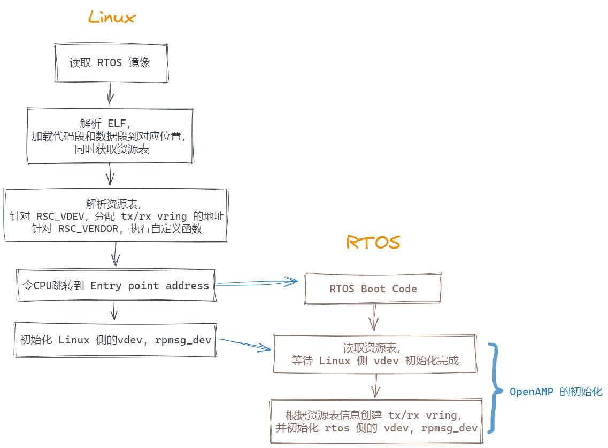
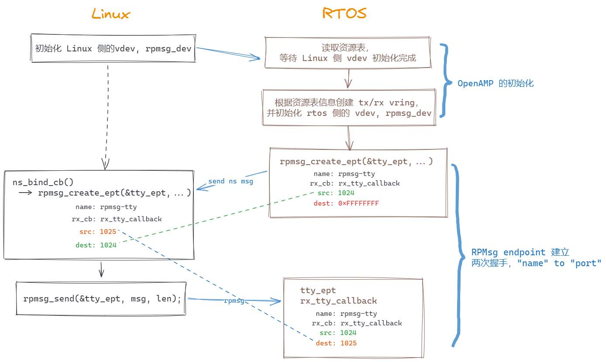

实时OS的对接工作¶
两个 OS 之间的通信，最底层的依赖可以概括为共享内存的读写和中断的收发。但为了实现高效的通信，还需要借助 OpenAMP 在不同的OS上实现一个传输层。 因此在 RTOS 侧，需要基于共享内存和中断完成 OpenAMP 的初始化。
此外，为了避免在代码中引入过多的静态资源定义，MICA 规定了实时OS需要添加 .resource_table 段（资源表）。
引入资源表，一方面能够让 Linux 在加载 RTOS 时，辨别 RTOS 需要哪些资源，从而进行资源的动态分配；另一方面还能通过资源表的特定表项来扩展更多的功能，包括生命周期管理、通信的恢复等。
因此，实时OS的对接工作主要包括：
资源表的适配；
OpenAMP 的初始化。
资源表的适配¶
资源表介绍
资源表是 ELF 镜像中的
.resource_table段，其包含 RTOS 所需要的系统资源。RTOS 侧所需要的资源信息，需要使用对应的资源表项进行承载，并整合存放到资源表中。Linux 在加载 RTOS ELF 镜像时，会先找到
.resource_table段，再根据其中存放的表项执行对应的初始化动作。因此，
.resource_table段需要将下面的结构体放在起始位置，以便于Linux解析：/** * struct resource_table - firmware resource table header * @ver: version number * @num: number of resource entries * @reserved: reserved (must be zero) * @offset: array of offsets pointing at the various resource entries * * The header of the resource table, as expressed by this structure, * contains a version number (should we need to change this format in the * future), the number of available resource entries, and their offsets * in the table. */ struct resource_table { u32 ver; u32 num; u32 reserved[2]; u32 offset[0]; } __packed;紧接着该结构体的是资源表项，每个资源表项都需要以下面的结构作为开头，前32位是资源表项的类型，之后的是该资源表项的具体数据：
/** * struct fw_rsc_hdr - firmware resource entry header * @type: resource type * @data: resource data * * Every resource entry begins with a 'struct fw_rsc_hdr' header providing * its @type. The content of the entry itself will immediately follow * this header, and it should be parsed according to the resource type. */ struct fw_rsc_hdr { u32 type; u8 data[0]; } __packed;每个资源表项都有唯一的类型，当前 OpenAMP 支持的资源表项类型包括：
/** * enum fw_resource_type - types of resource entries * * @RSC_CARVEOUT: request for allocation of a physically contiguous memory region. * @RSC_DEVMEM: request to iommu_map a memory-based peripheral. * @RSC_TRACE: announces the availability of a trace buffer into which * the remote remoteproc will be writing logs. * @RSC_VDEV: declare support for a virtio device, and serve as its virtio header. * @RSC_VENDOR_START: start of the vendor specific resource types range * @RSC_VENDOR_END : end of the vendor specific resource types range * @RSC_LAST: just keep this one at the end * * Please note that these values are used as indices to the rproc_handle_rsc * lookup table, so please keep them sane. Moreover, @RSC_LAST is used to * check the validity of an index before the lookup table is accessed, so * please update it as needed. */ enum fw_resource_type { RSC_CARVEOUT = 0, RSC_DEVMEM = 1, RSC_TRACE = 2, RSC_VDEV = 3, RSC_LAST = 4, RSC_VENDOR_START = 128, RSC_VENDOR_END = 512, };具体每一个表项的定义，可以查看 OpenAMP 中资源表项的定义。 当前 OS 之间的通信需要用到的是
RSC_VDEV，即通过该资源表项，声明 RTOS 侧的 virtio device 需要的资源信息。另外，还可以在 [128, 511] 范围内扩展用户自定义的资源表项。
资源表样例
See also
以 UniProton 的 resource_table 为例，通过使用
__attribute__((section(".resource_table")))将下面的结构体放置到.resource_table段中：static struct fw_resource_table resource_table = { .ver = 1, /* 资源表项的数量 */ .num = RSC_TABLE_NUM_ENTRY, /* 每个资源表项在资源表中的偏移 */ .offset = { offsetof(struct fw_resource_table, vdev), }, /* * offset 之后为具体的资源表项内容，以下为 RPMsg Virtio Device 的配置 * * RSC_VDEV: 对应的资源表项的类型为 RSC_VDEV * VIRTIO_ID_RPMSG: Virtio ID, 对应于 virtio_ids.h 中的定义，表明该 Virtio 设备用于 RPMsg * 2: Virtio 设备的 notifyid, 不能与 vring 的 notifyid 重复，由于 vring 使用了0和1，因此这里指定为2 * RPMSG_VDEV_DFEATURES: 配置为1，表示支持 RPMsg name service * VRING_COUNT: 对应的 vring 的数量，为2，包括 tx vring 和 rx vring */ .vdev = { RSC_VDEV, VIRTIO_ID_RPMSG, 2, RPMSG_VDEV_DFEATURES, 0, 0, 0, VRING_COUNT, {0, 0}, }, /* * Vring 的配置，为 RSC_VDEV 表项的最后一部分 * * vring0 - tx vring * vring1 - rx vring * * VRING_TX_ADDRESS, VRING_RX_ADDRESS: 配置为 -1，由 Linux 侧为 vring 分配地址 * VRING_ALIGNMENT: vring 的对齐要求 * NUM_RPMSG_BUFF: vring 的 buffer 数量，必须为 2 的幂次方 * VRING0_ID, VRING1_ID: vring 的 notifyid，可以分别指定为 0，1 */ .vring0 = {VRING_TX_ADDRESS, VRING_ALIGNMENT, NUM_RPMSG_BUFF, VRING0_ID, 0}, .vring1 = {VRING_RX_ADDRESS, VRING_ALIGNMENT, NUM_RPMSG_BUFF, VRING1_ID, 0}, };METAL_PACKED_BEGIN struct fw_resource_table { unsigned int ver; unsigned int num; unsigned int reserved[2]; unsigned int offset[RSC_TABLE_NUM_ENTRY]; // 每个表项在资源表中的偏移 struct fw_rsc_vdev vdev; // RSC_VDEV 类型的资源表项 struct fw_rsc_vdev_vring vring0; struct fw_rsc_vdev_vring vring1; } METAL_PACKED_END;之后，在 UniProton 的链接脚本中，将
.resource_table段链接到 ELF 镜像中：$ readelf -eW rtos.elf ELF Header: ... ... Entry point address: 0x7a001094 ... ... Section Headers: [Nr] Name Type Address Off Size ES Flg Lk Inf Al ... ... [ 1] text PROGBITS 000000007a000000 001000 00f000 00 AX 0 0 2048 ... ... [16] .resource_table PROGBITS 000000007a029230 013080 000058 00 WA 0 0 4 Section to Segment mapping: Segment Sections... 00 text ...... rodata bss noinit 01 datas ...... .resource_table可以看到，资源表被放置在数据段的最后一部分，起始地址为 0x7a029230，大小为 0x58。
MICA 通过解析 RTOS ELF 的信息，将 RTOS 的代码段和数据段分别加载到对应的内存位置。即从
text的起始地址(0x7a000000)开始，到.resource_table的结束地址。另外，值得注意的是，RTOS ELF 镜像的入口地址为
0x7a001094，这意味着加载完成后，CPU会跳转到该地址运行。初始化流程如下：

OpenAMP的初始化¶
针对资源表中的 RSC_VDEV 表项，Linux 首先会为其中的 tx/rx vring 分配共享内存地址，再根据表项中的配置初始化 Linux 侧的 vdev (virtio device)。 之后，RTOS 可以根据资源表中的信息，获取 tx/rx vring 的起始地址，动态初始化 vring，而不需要在代码中做过多的静态定义。
因此，RTOS侧的 OpenAMP 的初始化流程可以简单概括为以下几个步骤：
使能对应的中断。根据不同的场景，中断有不同的实现。例如，裸金属部署场景，中断通过7号 SGI 中断实现；jailhouse 部署，中断会通过 ivshmem doorbell 实现。
根据资源表创建 vdev。
等待 Linux 侧的 vdev 初始化完成后，再根据资源表中的 vring 信息动态初始化 vdev 对应的 tx/rx vring。
根据 vdev 初始化 rpmsg device。
对应的代码流程如下：
/* 根据资源表创建 vdev */
vdev = rproc_virtio_create_vdev(VIRTIO_DEV_DEVICE, VDEV_ID,
rsc_table_to_vdev(rsc_table),
rsc_io, NULL, virtio_notify, NULL);
/* 等待 Linux 侧的 vdev 初始化完成 */
rproc_virtio_wait_remote_ready(vdev);
/* 从资源表中获取 tx vring 的信息 */
vring_rsc = rsc_table_get_vring0(rsc_table);
/* 初始化 tx vring */
ret = rproc_virtio_init_vring(vdev, 0, vring_rsc->notifyid,
(void *)(uintptr_t)vring_rsc->da, rsc_io,
vring_rsc->num, vring_rsc->align);
/* 初始化 rx vring */
vring_rsc = rsc_table_get_vring1(rsc_table);
ret = rproc_virtio_init_vring(vdev, 1, vring_rsc->notifyid,
(void *)(uintptr_t)vring_rsc->da, rsc_io,
vring_rsc->num, vring_rsc->align);
/* 使用 vdev 创建 rpmsg device */
ret = rpmsg_init_vdev(&rvdev, vdev, NULL, shm_io, NULL);
ret = rpmsg_virtio_get_rpmsg_device(&rvdev);
See also
另外，为了避免中断时间过长，影响实时性，可以考虑将 rproc_virtio_notified 放到线程中执行，在中断流程仅做线程的唤醒：
void receive_message(void)
{
/* 等待信号量 */
Waiting for semaphore ...
/* 信号量到来后，说明 rx vring 有需要处理的消息，进行 virtio_notify */
rproc_virtio_notified(vdev, VRING1_ID);
}
完成 OpenAMP 的初始化后，RTOS 可以通过 rpmsg device 创建 rpmsg endpoint 与 Linux 进行通信：
/*
* 通过 name service 创建名为 "rpmsg-tty" 的 endpoint
* Linux 接收到 name service 的消息后，会创建匹配的 endpoint，之后两端可以进行消息通信
* RTOS 会通过 rpmsg_rx_tty_callback 处理 Linux 侧发来的消息
*/
ret = rpmsg_create_ept(&tty_ept, rpdev, "rpmsg-tty",
RPMSG_ADDR_ANY, RPMSG_ADDR_ANY,
rpmsg_rx_tty_callback, NULL);
/*
* 利用 endpoint 发送消息
* Linux 侧的 MICA 默认会将来自于 "rpmsg-tty" 的消息转发到 /dev/ttyRPMSGx
*/
rpmsg_send(&tty_ept, tx_buff, len);
RPMsg 通信建立流程如下：

在 RTOS 调用 rpmsg_create_ept 建立 rpmsg-tty 端点时，并不需要指定该端点绑定的源地址和目的地址，而是通过 name service 进行 “name” 到 “port” 的转换。 name service 会在本地分配一个唯一的源地址，并将该服务名称(“rpmsg-tty”)和源地址(“src”)封装成 NS Msg(Name service Message)发送到Linux，触发 Linux 的 ns_bind_cb 回调。 在回调中，Linux侧可以进行服务的匹配和对应的初始化流程，并且会为 rpmsg-tty 服务分配 Linux 侧的源地址。这之后，Linux 侧 endpoint 的信息已经完整了，即 Linux 可以通过 rpmsg_send 向 RTOS 发送消息。 RTOS 侧首次接到该消息时，会更新 rpmsg-tty 的目的地址，完成 endpoint 的建立和绑定。